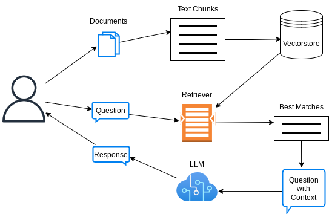

import dotenv
from langchain.text_splitter import RecursiveCharacterTextSplitter
from langchain_community.document_loaders import UnstructuredURLLoader, PyPDFLoader
from langchain_community.vectorstores import FAISS
from langchain_huggingface import HuggingFaceEndpoint, HuggingFaceEmbeddings
from langchain.chains import RetrievalQA
from langchain.prompts import ChatPromptTemplate, SystemMessagePromptTemplate, HumanMessagePromptTemplateRAG - Chatbot
Background
Here I will explain how to build the backend of a RAG-Chatbot, that will allow users to interact with locally available pdf documents and chosen URL’s.
The critical advantage of a RAG-chatbot, in comparison to a standard chatbot is the retrieval of best matching chunks of information provided by the user, and amendment of these information as context to the original question of the user, as illustrated here: 
This technique therefore effectively updates the knowledge base of a pre-trained LLM, and proves to be a feasible alternative to the expensive process of fine-tuning it.
In this implementation, we will use:
- LLM: zephyr-7b-alpha through Hugging Face serverless Inference API
- Embeddings: HF Sentence Transformers all-MiniLM-L6-v2
- Vectorstore: FAISS
- For glueing them all: LangChain (v0.3)
Note: the code snippets below have been copied and simplified from my original code here, which is in turn deployed to HuggingFace space here, which may well be sleeping due to inactivity (don’t hesitate to wake it up!)
Building the Bot
Let’s first import all the packages that will be needed.
Define some helper functions to load data from given url and pdf sources and convert to text chunks that will be later vectorized:
def load_data(urls, pdfs):
documents = []
if urls:
url_loader = UnstructuredURLLoader(urls=urls)
documents.extend(url_loader.load())
for pdf in pdfs:
pdf_loader = PyPDFLoader(pdf)
documents.extend(pdf_loader.load())
return documents
def sources_to_texts(documents):
# Retrieval system
chunk_size = 1000
chunk_overlap = 200
text_splitter = RecursiveCharacterTextSplitter(
chunk_size=chunk_size,
chunk_overlap=chunk_overlap)
texts = text_splitter.split_documents(documents)
return textsFunction to create a retriever using the helper functions above:
def create_retriever(documents, k):
texts = sources_to_texts(documents)
# Create embeddings
embeddings = HuggingFaceEmbeddings(model_name="all-MiniLM-L6-v2")
vectorstore = FAISS.from_documents(texts, embeddings)
retriever = vectorstore.as_retriever(search_kwargs={"k": k})
return retrieverLet’s define a helper function that creates a LangChain RetrievalQA bot based on a given llm and retriever:
def create_QAbot(retriever, llm):
# System prompt and prompt template
system_template = """
You are an AI assistant that answers questions based on the given context.
Your responses should be informative and relevant to the question asked.
If you don't know the answer or if the information is not present in the context, just say so.
After answering a user question, stop, and do not make up any follow up questions"""
human_template = """Context: {context}
Question: {question}
Answer: """
# Create the prompt
system_message_prompt = SystemMessagePromptTemplate.from_template(system_template)
human_message_prompt = HumanMessagePromptTemplate.from_template(human_template)
prompt = ChatPromptTemplate.from_messages([system_message_prompt, human_message_prompt])
QAbot = RetrievalQA.from_chain_type(
llm=llm,
chain_type="stuff",
retriever=retriever,
return_source_documents=True,
chain_type_kwargs={"prompt": prompt}
)
return QAbotLet’s now put everything together:
def setup_rag_bot(
urls,
pdfs,
k=3 # i.e., retrieve 3 best matching vectors
):
# Initial data
documents = load_data(
urls,
pdfs
)
# Create the retriever
retriever = create_retriever(
documents,
k=k
)
# Create the llm
llm = HuggingFaceEndpoint(
repo_id=f"huggingfaceh4/zephyr-7b-alpha",
temperature=0.01, # choose a small temperature to reduce hallucination potential, and to increase the chances to follow instructions
max_new_tokens=512
)
# Create a QA bot
RAGbot = create_QAbot(
retriever,
llm
)
return RAGbotFinally, let’s define a function that will act as the interface between the rag-chatbot and the user:
def ask_ragbot(RAGbot, question):
result = RAGbot.invoke({"query": question})
sources = [doc.metadata.get('source', 'Unknown source') for doc in result["source_documents"]]
response = {
"question": question,
"answer": result["result"],
"sources": sources
}
print(f"Question: {response['question']}")
print(f"Answer: {response['answer']}")
print("Sources:")
for source in response['sources']:
print(f"- {source}")Example Usage
Let’s now create a rag bot based on some URL’s and local pdf’s
ragbot = setup_rag_bot(
urls = [
"https://en.wikipedia.org/wiki/Artificial_intelligence",
"https://en.wikipedia.org/wiki/Machine_learning"
],
pdfs = ["/home/onur/WORK/DS/repos/chat_with_docs/docs/the-big-book-of-mlops-v10-072023 - Databricks.pdf"]
)Note: Environment variable`HF_TOKEN` is set and is the current active token independently from the token you've just configured.Time to have a chat!
ask_ragbot(ragbot, "What is Machine Learning?")Question: What is Machine Learning?
Answer:
Machine learning is the study of programs that can improve their performance on a given task automatically. It has been a part of AI from the beginning and is a field that started to flourish in the 1990s. There are several kinds of machine learning, including unsupervised learning, supervised learning (classification and regression), and probably approximately correct (PAC) learning. The term machine learning was coined in 1959 by Arthur Samuel, an IBM employee and pioneer in the field of computer gaming and artificial intelligence.
Sources:
- https://en.wikipedia.org/wiki/Artificial_intelligence
- https://en.wikipedia.org/wiki/Machine_learning
- https://en.wikipedia.org/wiki/Machine_learningask_ragbot(ragbot, "How does Databricks help with model deployment?")Question: How does Databricks help with model deployment?
Answer:
Databricks provides a comprehensive platform for data science and machine learning, which includes tools and features for model deployment. Databricks released Delta Lake to the open source community in 2019, which provides all the data lifecycle management functions that are needed to make cloud-based object stores reliable and performant. This design allows clients to update multiple objects at once and to replace a subset of data in place, which is essential for model deployment. Additionally, Databricks provides MLflow, a popular open-source platform for managing the end-to-end machine learning lifecycle, which includes model training, evaluation, and deployment. MLflow provides a Model Registry, which allows for managing model artifacts directly via UI and APIs, and provides flexibility to update production models without code changes. Overall, Databricks provides a robust and flexible platform for model deployment, which can help organizations operationalize their machine learning models more efficiently and effectively.
Sources:
- /home/onur/WORK/DS/repos/chat_with_docs/docs/the-big-book-of-mlops-v10-072023 - Databricks.pdf
- /home/onur/WORK/DS/repos/chat_with_docs/docs/the-big-book-of-mlops-v10-072023 - Databricks.pdf
- /home/onur/WORK/DS/repos/chat_with_docs/docs/the-big-book-of-mlops-v10-072023 - Databricks.pdf